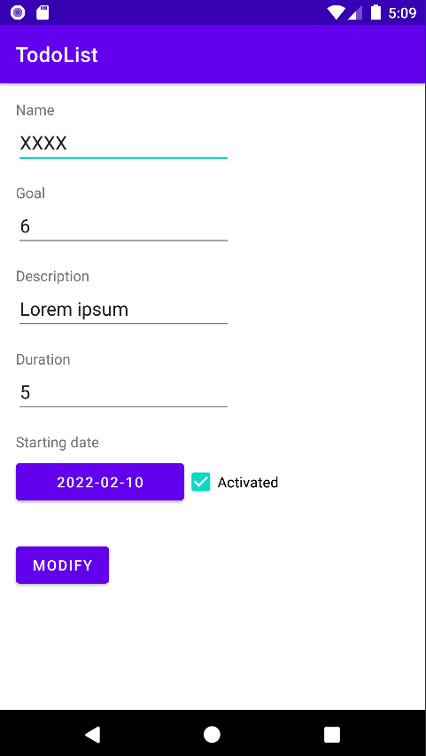
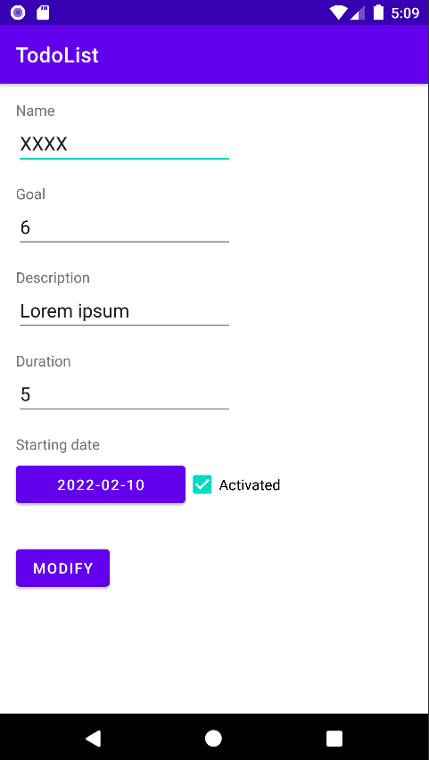

Todo's est un projet réalisé en solo dans le cadre du 4ème semestre de mon DUT Informatique.
Il avait pour but de me former au développement Android tout en réalisant une application assez classique pour me concentrer sur la partie technique.
Son fonctionnement est simple, il est possible des créer des Todo's, ce sont des éléments représentant des tâches, avec un temps, un objectif etc..
A la fin du temps imparti, si l'objectif est complété a 100% votre compteur de série augmente et le Todo recommenceras a 0 cycliquement selon vos paramètres
 
